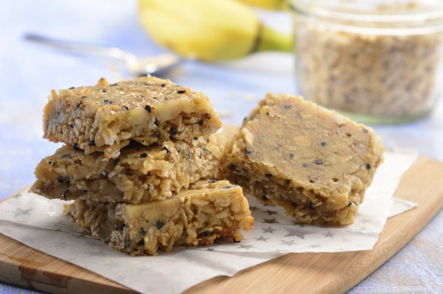

-
PUDDING DE CHÍA Y MANGO

Postre crudivegano, que además de tener un sabor delicioso, es nutritivo y fresco. Lo puedes acompañar con la fruta de tu elección y de esta manera darle un toque de sabor personalizado...
Leer Mas -
CUPCAKES DE AVENA Y PLÁTANO

Nos aportan energía, siempre es mejor si optamos por algo de bollería saludable. ¡Las magdalenas de avena y plátano están deliciosas!..
Leer Mas -
BARRITAS CROCANTES DE PLÁTANO Y AMARANTO
Rico snack de barritas saludables de plátano con amaranto y avena, con semillas de sésamo, endulzadas con miel. Puedes comerlas a cualquier hora del día. ¡Riquísimas!..
Leer Mas -
PANQUÉ DE CANELA, CLAVO Y MANZANAS

Pan sencillo y nutritivo para tener desayunos energéticos que además de mucho beneficios al cuerpo, tiene un maravilloso sabor a canela, manzana y clavo que lo hace irresistible y único. Su textura esponjosita no dejará que puedas resistirte a probarlo...
Leer Mas -
PUDÍN DE PLÁTANO LIGHT

Esta rica receta de pudín de plátano es una versión del favorito original pero con menos calorias gracias a la leche reducida en grasa (leche light) y las claras de huevo...
Leer Mas -
MADALENAS DE AVENA Y PLÁTANO
Alimentos farináceos. Nos aportan energía, pero siempre mejor si optamos por algo de bollería saludable...
Leer Mas -
PASTEL DE MAMEY

Delicioso pastel con un sabor muy original y delicioso a mamey. Es muy recomendable para festejas cualquier ocasión...
Leer Mas -
PAY DE LIMÓN CON MERENGUE FRANCÉS

Esta delicioso pay de limón es increíble con una masa crujiente, un exquisito relleno de limón y un suave merengue, son la combinación perfecta para pasar un excelente verano...
Leer Mas -
FLAN NAPOLITANO TRADICIONAL

Esta receta de Flan Napolitano tradicional no puede faltar en tu recetario de repostería...
Leer Mas -
CREPAS DE CAJETA TRADICIONALES

PAM te ayuda a controlar la cantidad de grasa al cocinar tus platillos. Al preparar esta receta con PAM tu platillo quedará con 50% menos calorías, 75% menos grasa y 73% menos colesterol que si lo hubieras preparado con aceite líquido convencional...
Leer Mas